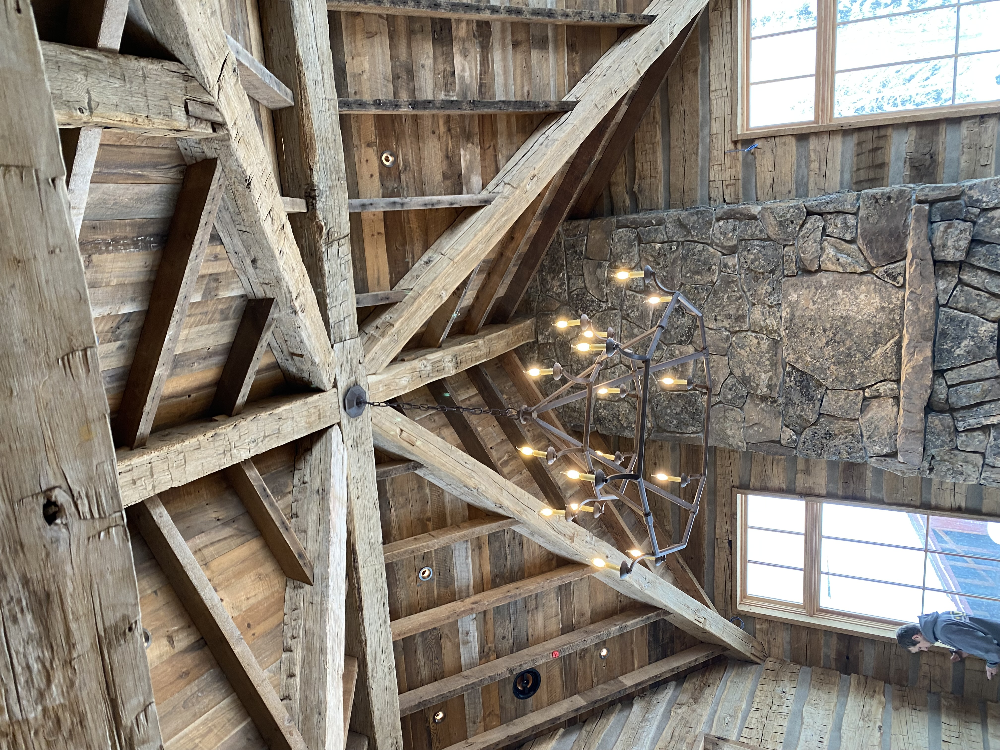

Timber framing is not finishing work. It is the structural decision that determines everything that follows — the volume of a room, the weight of a ceiling, the feeling of being inside.
The big beams timber frames Chase Construction builds are structural and expressive at once. They carry the load of the home and carry the character of it too. This is the work that takes genuine expertise — not just in engineering, but in understanding what a space should feel like at scale.
Most residential framing is hidden behind walls. Timber framing is meant to be seen. The connections, the spans, the proportions — they are as much a design decision as any interior finish. We build big timber frames that honor both requirements: structural integrity and visual power.
Large log homes and high-end residential builds demand timber framing at a scale that most contractors have never managed. We have. The spans are longer, the loads are heavier, the visual expectations are unforgiving.
Our timber framing work ranges across custom log homes, complex residential builds, and standalone structural projects in the Sun Valley area. We've worked alongside architects and designers who understand what premium timber framing looks like — and held to that standard.
We work directly with your architect and design team. Timber framing decisions happen early, before the rest of the build is locked in, and we make sure everyone is working from the same picture.

A timber frame is a commitment. It is one of the few elements of a home that genuinely improves with age — darker, more expressive, more settled into the structure. When it's built right, it doesn't need to be replaced. It becomes part of what the home is.
If your project requires big timber framing in the Sun Valley, Ketchum, or Hailey area, we'd like to be part of the conversation early.
Log construction uses the full log as the primary structural wall element. Timber framing uses large dimensional beams assembled into a structural skeleton — typically left exposed as a design feature. Many luxury builds combine both. We do both well.
We work primarily with Douglas fir, pine, and larch sourced from the region — species selected for structural performance, dimensional stability, and the visual character they bring to interior spaces.
As early as possible. Timber framing decisions affect structural engineering, floor plan layout, and mechanical routing. Getting us involved during design — not after — prevents costly revisions and produces a better result.
Big timber decisions made early save time and money in the build phase. We'd like to be part of your conversation from the start.
Start the Conversation